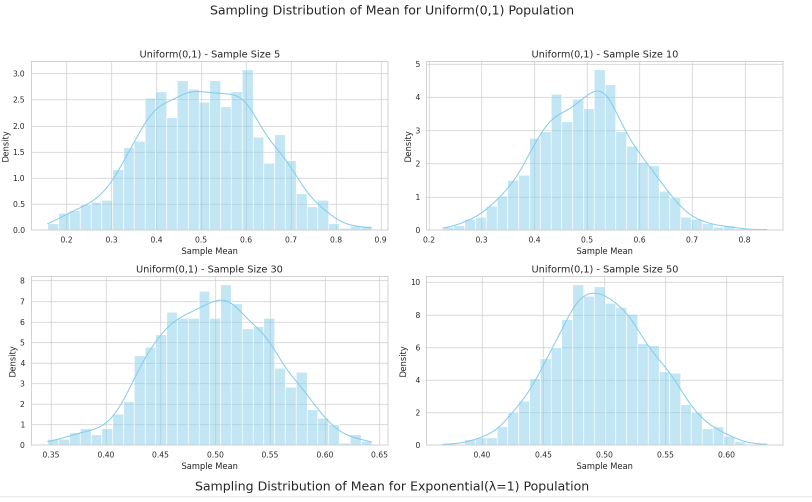

📊 Exploring the Central Limit Theorem through Simulations
🎯 Motivation
The Central Limit Theorem (CLT) states that if we repeatedly draw random samples of size \(n\) from a population with mean \(\mu\) and variance \(\sigma^2\), the distribution of the sample means \(\bar{X}\) approaches a normal distribution \(\mathcal{N}(\mu, \sigma^2/n)\) as \(n \to \infty\), regardless of the original distribution of the population.
This notebook simulates this principle using different population distributions.
🛠️ Tools Used
import numpy as np
import matplotlib.pyplot as plt
import seaborn as sns
sns.set(style="whitegrid")
1️⃣ Population Distributions
We explore 3 different distributions:
- Uniform: \(\mathcal{U}(0, 1)\)
- Exponential: \(\text{Exp}(\lambda=1)\)
- Binomial: \(\text{Bin}(n=10, p=0.5)\)
# Set seed for reproducibility
np.random.seed(42)
# Generate large populations
pop_size = 100_000
uniform_pop = np.random.uniform(0, 1, pop_size)
exponential_pop = np.random.exponential(1, pop_size)
binomial_pop = np.random.binomial(n=10, p=0.5, size=pop_size)
2️⃣ Sampling and Visualization
We draw samples of various sizes and compute sample means. This is repeated many times to visualize the sampling distribution.
def sample_means(population, sample_size, n_samples=1000):
return [np.mean(np.random.choice(population, sample_size)) for _ in range(n_samples)]
We compare histograms of sample means for different sample sizes:
sample_sizes = [5, 10, 30, 50]
def plot_sampling_distribution(population, name):
plt.figure(figsize=(16, 10))
for i, size in enumerate(sample_sizes):
means = sample_means(population, size)
plt.subplot(2, 2, i + 1)
sns.histplot(means, bins=30, kde=True, color="skyblue")
plt.title(f"{name} - Sample size {size}")
plt.xlabel("Sample Mean")
plt.ylabel("Frequency")
plt.suptitle(f"Sampling Distributions from {name} Population", fontsize=16)
plt.tight_layout(rect=[0, 0.03, 1, 0.95])
plt.show()
plot_sampling_distribution(uniform_pop, "Uniform(0,1)")
plot_sampling_distribution(exponential_pop, "Exponential(λ=1)")
plot_sampling_distribution(binomial_pop, "Binomial(n=10, p=0.5)")

3️⃣ Parameter Exploration
✅ Observation:
As the sample size increases, the distribution of sample means approaches a normal distribution regardless of the original shape.
📏 Spread of Sampling Distribution:
- The standard deviation of the sample means (Standard Error) is:
$$ \text{SE} = \frac{\sigma}{\sqrt{n}} $$
- This explains why the sampling distributions become narrower as \(n\) increases.
📚 4️⃣ Practical Applications of CLT
- Quality Control: Monitoring manufacturing processes by sampling batches.
- Surveys and Polling: Estimating population opinions via random samples.
- Finance: Modeling average returns or risk in portfolios.
- Medical Trials: Assessing treatment effectiveness from samples.
📌 Summary
- The CLT ensures that the sampling distribution of the mean becomes normal with increasing sample size.
- Simulations with uniform, exponential, and binomial populations confirmed this visually.
- The rate of convergence depends on the original distribution and sample size.
📁 References
- Rice, J. A. (2006). Mathematical Statistics and Data Analysis.
- Wackerly, D., Mendenhall, W., & Scheaffer, R. (2008). Mathematical Statistics with Applications.